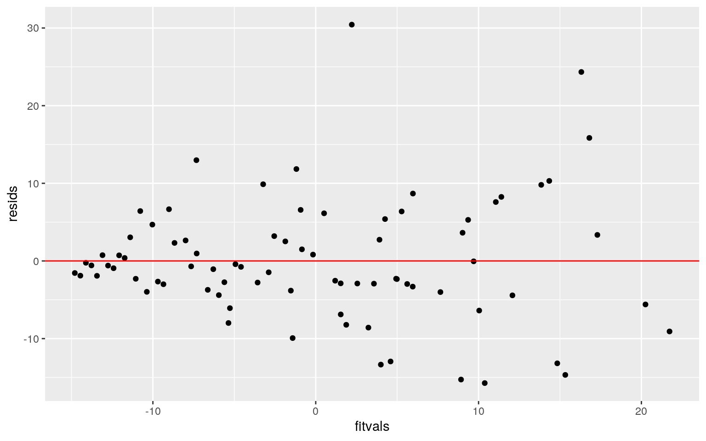

January 1, 0001
Modeling
Instructions
A knitted R Markdown document (preferably HTML) and the raw R Markdown file (as .Rmd) should both be submitted to Canvas by 11:59pm on the due date. These two documents will be graded jointly, so they must be consistent (i.e., don’t change the R Markdown file without also updating the knitted document). In the .Rmd file for Project 2, you can copy the first code-chunk into your project .Rmd file to get better formatting. Notice that you can adjust the opts_chunk$set(…) above to set certain parameters if necessary to make the knitting cleaner (you can globally set the size of all plots, etc). You can copy the set-up chunk in Project2.Rmd: I have gone ahead and set a few for you (such as disabling warnings and package-loading messges when knitting)!
Like before, I envision your written text forming something of a narrative structure around your code/output. All results presented must have corresponding code. Any answers/results/plots etc. given without the corresponding R code that generated the result will not be graded. Furthermore, all code contained in our project document should work properly. Please do not include any extraneous code or code which produces error messages. (Code which produces warnings is fine as long as you understand what the warnings mean.)
Find data:
Find one dataset with at least 5 variables (ideally more!) that you want to use to build models/test hypotheses. At least one should be categorical (with 2-5 groups, ideally; definitely fewer than 10) and at least two should be numeric (taking on more than 10 distinct values). Ideally, at least of your variables will be binary (if not, you will have to create one by discretizing a numeric or collapsing levels of a categorical). You will need a minimum of 40 observations (at least 10 observations for every explanatory variable you have, ideally 20+ observations/variable).
It is perfectly fine to use either dataset (or the merged dataset, or a subset of your variables) from Project 1. However, I might encourage you to diversify things a bit and choose a different dataset to work with (particularly if the variables did not reveal interesting associations in Project 1 that you want to follow up with). The only requirement/restriction is that you may not use data from any examples we have done in class or lab. It would be a good idea to pick more cohesive data this time around (i.e., variables that you actually thing might have a relationship you would want to test). Think more along the lines of your Biostats project.
Again, you can use data from anywhere you want (see bottom for resources)! If you want a quick way to see whether a built-in (R) dataset has binary and/or character (i.e., categorical) variables, check out this list: https://vincentarelbundock.github.io/Rdatasets/datasets.html.
Guidelines and Rubric
- 0. (5 pts) Introduce your dataset and each of your variables (or just your main variables if you have lots) in a paragraph. What are they measuring? How many observations?
- 1. (15 pts) Perform a MANOVA testing whether any of your numeric variables (or a subset of them, if including them all is unreasonable or doesn’t make sense) show a mean difference across levels of one of your categorical variables (3). If they do, perform univariate ANOVAs to find response(s) showing a mean difference across groups (3), and perform post-hoc t tests to find which groups differ (3). Discuss the number of tests you have performed, calculate the probability of at least one type I error (if unadjusted), and adjust the significance level accordingly (bonferroni correction) before discussing significant differences (3). Briefly discuss some of the MANOVA assumptions and whether or not they are likely to have been met here (no need for anything too in-depth) (2).
## The data I chose to use is called
## 'AmericasTopColleges2019.' This data set includes 80
## observations in which American colleges are ranked and
## contains 16 variables. The variables are the following:
## Rank (based on alumni salary, student satisfaction, on time
## graduation), Name (name of college), City (city where
## campus is located), State (state where campus is located),
## Public/Private (whether school is publically or privately
## funded), Undergrad Population (number of enrolled
## undergraduate students), Student Population (total number
## of students enrolled), Net Price (average cost for one year
## of education), Average Grant Aid (average amount of money
## students receive each year to help pay for college), Total
## Annual Cost, Alumni Salary, Acceptace Rate, SAT Lower, SAT
## Upper, ACT Lower, and ACT Upper.
colleges2019 <- read.csv("AmericasTopColleges2019.csv")
data(AmericasTopColleges2019)
man1 <- manova(cbind(Average.Grant.Aid, Total.Annual.Cost) ~
Public.Private, data = colleges2019)
summary(man1)## Df Pillai approx F num Df den Df Pr(>F)
## Public.Private 1 0.80486 158.79 2 77 < 2.2e-16 ***
## Residuals 78
## ---
## Signif. codes: 0 '***' 0.001 '**' 0.01 '*' 0.05 '.' 0.1
' ' 1summary.aov(man1)## Response Average.Grant.Aid :
## Df Sum Sq Mean Sq F value Pr(>F)
## Public.Private 1 1.2736e+10 1.2736e+10 320.84 < 2.2e-16
***
## Residuals 78 3.0963e+09 3.9696e+07
## ---
## Signif. codes: 0 '***' 0.001 '**' 0.01 '*' 0.05 '.' 0.1
' ' 1
##
## Response Total.Annual.Cost :
## Df Sum Sq Mean Sq F value Pr(>F)
## Public.Private 1 1.2186e+10 1.2186e+10 84.187 4.933e-14
***
## Residuals 78 1.1291e+10 1.4475e+08
## ---
## Signif. codes: 0 '***' 0.001 '**' 0.01 '*' 0.05 '.' 0.1
' ' 1colleges2019 %>% group_by(Public.Private) %>% summarise(mean(Average.Grant.Aid),
mean(Total.Annual.Cost))## # A tibble: 2 x 3
## Public.Private `mean(Average.Grant.Aid)`
`mean(Total.Annual.Cost)`
## <fct> <dbl> <dbl>
## 1 Private 40676. 69646.
## 2 Public 11026. 40643.pairwise.t.test(colleges2019$Average.Grant.Aid, colleges2019$Average.Grant.Aid,
p.adj = "none")##
## Pairwise comparisons using t tests with pooled SD
##
## data: colleges2019$Average.Grant.Aid and
colleges2019$Average.Grant.Aid
##
## 0 3597 6636 6733 8955 10644 12779 13595 14051 17291
18231 18319 18738 18751 20011 21171 26671
## 3597 - - - - - - - - - - - - - - - - -
## 29429 29783 30163 31542 31633 32452 33782 33946 34156
34966 36014 36164 36359 36387 36686
## 3597 - - - - - - - - - - - - - - -
## 36717 36963 37883 38163 38213 38342 38542 38605 39590
39671 39957 40673 40716 41143 41257
## 3597 - - - - - - - - - - - - - - -
## 41359 41408 41893 41977 42455 42495 43238 43248 43276
43491 43611 44247 44517 44776 44801
## 3597 - - - - - - - - - - - - - - -
## 45108 45463 45777 45805 46105 47171 47836 48050 48088
48930 49185 49467 49870 50134
## 3597 - - - - - - - - - - - - - -
## [ reached getOption("max.print") -- omitted 75 rows ]
##
## P value adjustment method: nonepairwise.t.test(colleges2019$Total.Annual.Cost, colleges2019$Total.Annual.Cost,
p.adj = "none")##
## Pairwise comparisons using t tests with pooled SD
##
## data: colleges2019$Total.Annual.Cost and
colleges2019$Total.Annual.Cost
##
## 0 8646 43409 46202 49366 49698 49885 51152 51159 51786
59012 60177 61915 62176 62633 63158
## 8646 - - - - - - - - - - - - - - - -
## 65003 65045 65925 65950 66150 66214 66220 66678 66950
67392 67430 67670 68070 68231 68432
## 8646 - - - - - - - - - - - - - - -
## 68582 68640 68835 68846 68870 68901 69034 69109 69130
69180 69368 69395 69439 69464 69600
## 8646 - - - - - - - - - - - - - - -
## 69725 69860 69863 69935 70094 70125 70302 70321 70370
70500 70588 70600 70650 71050 71060
## 8646 - - - - - - - - - - - - - - -
## 71282 71290 71300 71580 71614 71715 71745 71764 71790
71827 71975 72209 72980 74199 74428
## 8646 - - - - - - - - - - - - - - -
## [ reached getOption("max.print") -- omitted 75 rows ]
##
## P value adjustment method: nonelibrary(rstatix)
group <- colleges2019$Public.Private
DVs <- colleges2019 %>% select(Average.Grant.Aid, Total.Annual.Cost)
sapply(split(DVs, group), mshapiro_test)## Private Public
## statistic 0.9869802 0.8381185
## p.value 0.763401 0.004324522# 1 MANOVA, 2 ANOVAs and 2 t-tests were performed.The MANOVA
# provided significant differences among the public and
# private schools for at least once of numerical variables.
# Pillai = 0.80486, F = 158.79, and p = 2.2e-16. Univariate
# ANOVAs were performed as a follow-up and for Average Grant
# Aid the statistics are the following: F = 320.84 and p =
# 2.2e-16. For math, the statistics are the following: F =
# 84.187 and p = 4.933e-14. Pairwise comparisons (t-tests)
# were also conducted and since Average Grant Aid and Total
# Annual Cost differed, the alpha value had to be adjusted
# with the Bonferroni method for controlling Type I error.
# Thus the alpha is 0.05/5 = 0.01 which no longer shows that
# everything is significant. The p-value for Public was <0.5
# so the main assumptions are violated.- 2. (10 pts) Perform some kind of randomization test on your data (that makes sense). The statistic can be anything you want (mean difference, correlation, F-statistic/ANOVA, chi-squared), etc. State null and alternative hypotheses, perform the test, and interpret the results (7). Create a plot visualizing the null distribution and the test statistic (3).
colleges2019$Acceptance.Rate = colleges2019$Acceptance.Rate -
mean(colleges2019$Acceptance.Rate, na.rm = T)
fit = lm(Rank ~ Public.Private * Acceptance.Rate, data = colleges2019)
summary(fit)##
## Call:
## lm(formula = Rank ~ Public.Private * Acceptance.Rate,
data = colleges2019)
##
## Residuals:
## Min 1Q Median 3Q Max
## -49.442 -9.802 -1.708 8.512 42.947
##
## Coefficients:
## Estimate Std. Error t value Pr(>|t|)
## (Intercept) 41.6817 1.9682 21.178 < 2e-16 ***
## Public.PrivatePublic 2.6679 4.3449 0.614 0.54103
## Acceptance.Rate 1.7997 0.1899 9.479 1.62e-14 ***
## Public.PrivatePublic:Acceptance.Rate -0.9659 0.2971
-3.251 0.00172 **
## ---
## Signif. codes: 0 '***' 0.001 '**' 0.01 '*' 0.05 '.' 0.1
' ' 1
##
## Residual standard error: 14.93 on 76 degrees of freedom
## Multiple R-squared: 0.6028, Adjusted R-squared: 0.5872
## F-statistic: 38.45 on 3 and 76 DF, p-value: 3.173e-15# library(vegan) colleges2019 %>% group_by(Public.Private)
# %>% summarise(means = mean(Acceptance.Rate)) %>%
# summarise(mean_diff = diff(means)) rand_dist <- vector()
# for (i in 1:5000) { new <- data.frame(Acceptance.Rate =
# sample(colleges2019$Acceptance.Rate), Public.Private =
# colleges2019$Acceptance.Rate) rand_dist[i] <-
# mean(new[new$Public.Private =='Public', ]$Acceptance.Rate)
# - mean(new[new$Public.Private == 'Private',
# ]$Acceptance.Rate) } {hist(rand_dist,main='',ylab='');
# abline(v = c(0, 10.37791),col='red')}
# gmean(rand_dist> 10.37791 | rand_dist < -10.37791)
# H0: The rate of acceptance is the same for Public and
# Private. HA: The rate of acceptance is different for Public
# and Private. Since the p-value: 0.03511, we reject the null
# hypothesis.- 3. (40 pts) Build a linear regression model predicting one of your response variables from at least 2 other variables, including their interaction. Mean-center any numeric variables involved in the interaction.
colleges2019$Rank <- colleges2019$Rank - mean(colleges2019$Rank)
colleges2019$Acceptance.Rate <- colleges2019$Acceptance.Rate -
mean(colleges2019$Acceptance.Rate)
fit1 <- lm(Acceptance.Rate ~ Public.Private * Rank, data = colleges2019)
summary(fit1)##
## Call:
## lm(formula = Acceptance.Rate ~ Public.Private * Rank,
data = colleges2019)
##
## Residuals:
## Min 1Q Median 3Q Max
## -15.7292 -3.7449 -0.8481 3.4230 30.4356
##
## Coefficients:
## Estimate Std. Error t value Pr(>|t|)
## (Intercept) -1.35771 1.03957 -1.306 0.1955
## Public.PrivatePublic 4.12558 2.33661 1.766 0.0815 .
## Rank 0.34020 0.04445 7.653 5.07e-11 ***
## Public.PrivatePublic:Rank 0.15230 0.10452 1.457 0.1492
## ---
## Signif. codes: 0 '***' 0.001 '**' 0.01 '*' 0.05 '.' 0.1
' ' 1
##
## Residual standard error: 8.04 on 76 degrees of freedom
## Multiple R-squared: 0.591, Adjusted R-squared: 0.5748
## F-statistic: 36.6 on 3 and 76 DF, p-value: 9.597e-15coef(fit1)## (Intercept) Public.PrivatePublic Rank
## -1.3577126 4.1255754 0.3401992
## Public.PrivatePublic:Rank
## 0.1522976colleges2019 %>% ggplot(aes(Rank, Acceptance.Rate)) + geom_point() +
geom_smooth(method = "lm", se = F)cor(colleges2019$Rank, colleges2019$Acceptance.Rate)## [1] 0.7398459resids <- fit1$residuals
fitvals <- fit1$fitted.values
ggplot() + geom_point(aes(fitvals, resids)) + geom_hline(yintercept = 0,
color = "red")
ggplot() + geom_histogram(aes(resids))ggplot() + geom_qq(aes(sample = resids)) + geom_qq()# coeftest(fit1)[,1:2] coeftest(fit1,
# vcov=vcovHC(fit1))[,1:2]
fit <- lm(Rank ~ Acceptance.Rate, data = colleges2019)
SST <- sum((colleges2019$Acceptance.Rate - mean(colleges2019$Acceptance.Rate))^2)
SST <- sum((colleges2019$Acceptance.Rate - mean(colleges2019$Acceptance.Rate))^2)
SSR <- sum((fit$fitted.values - mean(colleges2019$Acceptance.Rate))^2)
SSE <- sum(fit$residuals^2)
SSR/SST## [1] 1.943931# My coefficient was positive which means that as rank
# variable (x-axis) increases, the mean of the acceptance
# rate variable (y-axis) would also increase. A ggplot was
# conducted to show the interactions between the variables
# that had the mean centered. Linearity, normality, and
# homoskedasticity were violated. Large residuals were seen,
# therefore I tested for robust SEs. The corrected SEs robust
# to the violations of homoskedasticity. The standard errors
# for the robust are different from the non-robust. My model
# explains 194% of the variation outcome.- Interpret the coefficient estimates (do not discuss significance) (10)
- Plot the regression using `ggplot()` using geom_smooth(method="lm"). If your interaction is numeric by numeric, refer to code in the slides to make the plot or check out the `interactions` package, which makes this easier. If you have 3 or more predictors, just chose two of them to plot for convenience. (10)
- What proportion of the variation in the outcome does your model explain? (4)
- Check assumptions of linearity, normality, and homoskedasticity either graphically or using a hypothesis test (5)
- Regardless, recompute regression results with robust standard errors via `coeftest(..., vcov=vcovHC(...))`. Discuss significance of results, including any changes from before/after robust SEs if applicable. (10)- 4. (5 pts) Rerun same regression model (with the interaction), but this time compute bootstrapped standard errors (either by resampling observations or residuals). Discuss any changes you observe in SEs and p-values using these SEs compared to the original SEs and the robust SEs)
samp_distn <- replicate(5000, {
boot_dat <- boot_dat <- colleges2019[sample(nrow(colleges2019),
replace = TRUE), ]
fit <- lm(Acceptance.Rate ~ Public.Private * Rank, data = boot_dat)
coef(fit)
})
samp_distn %>% t %>% as.data.frame %>% summarize_all(sd)## (Intercept) Public.PrivatePublic Rank
Public.PrivatePublic:Rank
## 1 0.8898188 2.918956 0.03339278 0.1430881- 5. (30 pts) Fit a logistic regression model predicting a binary variable (if you don’t have one, make/get one) from at least two explanatory variables (interaction not necessary).
library(tidyverse)
library(lmtest)
library(plotROC)
data <- colleges2019 %>% mutate(y = ifelse(Public.Private ==
"Public", 1, 0))
head(data)## Rank Name City State Public.Private Undergrad.Population
## 1 -39.5 Harvard University Cambridge MA Private 13844
## 2 -38.5 Stanford University Stanford CA Private 8402
## 3 -37.5 Yale University New Haven CT Private 6483
## 4 -36.5 Massachusetts Institute of Technology Cambridge
MA Private 4680
## 5 -35.5 Princeton University Princeton NJ Private 5659
## Student.Population Net.Price Average.Grant.Aid
Total.Annual.Cost Alumni.Salary Acceptance.Rate
## 1 31120 14327 49870 69600 146800 -16.35
## 2 17534 13261 50134 69109 145200 -16.35
## 3 12974 18627 50897 71290 138300 -14.35
## 4 11466 20771 43248 67430 155200 -14.35
## 5 8273 9327 48088 66150 139400 -15.35
## SAT.Lower SAT.Upper ACT.Lower ACT.Upper y
## 1 1460 1590 32 35 0
## 2 1390 1540 32 35 0
## 3 1460 1580 32 35 0
## 4 1490 1570 33 35 0
## 5 1430 1570 31 35 0
## [ reached 'max' / getOption("max.print") -- omitted 1
rows ]fit2 <- glm(y ~ Acceptance.Rate, data = data, , family = binomial(link = "logit"))
coeftest(fit2)##
## z test of coefficients:
##
## Estimate Std. Error z value Pr(>|z|)
## (Intercept) -1.308765 0.293855 -4.4538 8.437e-06 ***
## Acceptance.Rate 0.066803 0.022829 2.9262 0.003431 **
## ---
## Signif. codes: 0 '***' 0.001 '**' 0.01 '*' 0.05 '.' 0.1
' ' 1exp(coef(fit))## (Intercept) Acceptance.Rate
## 1.000000 4.031946# For Acceptance Rate=0, log odds is -1.309, so e^-1.309 =
# 0.2700 For Acceptance Rate=1, log odds is -1.309 + 0.0067
# so e^0.294 = 1.342
logistic <- function(x) {
exp(x)/(1 + exp(x))
}
# confusion matrix
table(truth = data$Public.Private, prediction = data$Acceptance.Rate >
1) %>% addmargins## prediction
## truth FALSE TRUE Sum
## Private 43 18 61
## Public 7 12 19
## Sum 50 30 80# accuracy
(18 + 21)/80## [1] 0.4875# TNR specificity
12/19## [1] 0.6315789# TPR sensitivity
18/61## [1] 0.295082# PPV precision
18/30## [1] 0.6# AUC
widths <- diff(data$y)
heights <- vector()
for (i in 1:100) heights[i] <- data$y[i] + data$y[i + 1]
AUC <- sum(heights * widths/2)
AUC %>% round(3)## [1] NA# density plot
colleges2019$logit <- predict(fit2, type = "link")
colleges2019 %>% ggplot() + geom_density(aes(logit, color = Public.Private,
fill = Public.Private), alpha = 0.4) + theme(legend.position = c(0.3,
0.6)) + geom_vline(xintercept = 2) + xlab("logit (log-odds)") +
geom_rug(aes(logit, color = Public.Private))
# ROC
library(plotROC)
ROCplot <- ggplot(data) + geom_roc(aes(d = y, m = Acceptance.Rate),
n.cuts = 0)
ROCplotcalc_auc(ROCplot)## PANEL group AUC
## 1 1 -1 0.7092321# The coefficient intercept estimate is -1.309. When
# increasing 1 Acceptance Rate percent, it multiplies the
# odds by a factor of 1.342. A confusion matrix table was
# computed to calculate accuracy (0.4875), sensitivity
# (0.295), specificity (0.632) and precision (0.6). A density
# plot was also created to visualize accuracy, sensitivity,
# specificity and precision. An ROC curve was also generated
# and AUC was calculated from the ROC, AUC = 0.709.- Interpret coefficient estimates in context (10)
- Report a confusion matrix for your logistic regression (5)
- Compute and discuss the Accuracy, Sensitivity (TPR), Specificity (TNR), Precision (PPV), and AUC of your model (5)
- Using ggplot, make a density plot of the log-odds (logit) colored/grouped by your binary outcome variable (5)
- Generate an ROC curve (plot) and calculate AUC (either manually or with a package); interpret (5)- 6. (25 pts) Perform a logistic regression predicting the same binary response variable from ALL of the rest of your variables (the more, the better!)
library(tidyverse)
library(lmtest)
library(pROC)
library(glmnet)
# class_diag<-function(probs,truth){
# tab<-table(factor(probs>.5,levels=c('FALSE','TRUE')),truth)
# acc=sum(diag(tab))/sum(tab) sens=tab[2,2]/colSums(tab)[2]
# spec=tab[1,1]/colSums(tab)[1] ppv=tab[2,2]/rowSums(tab)[2]
# if(is.numeric(truth)==FALSE & is.logical(truth)==FALSE)
# truth<-as.numeric(truth)-1 ord<-order(probs,
# decreasing=TRUE) probs <- probs[ord]; truth <- truth[ord]
# TPR=cumsum(truth)/max(1,sum(truth))
# FPR=cumsum(!truth)/max(1,sum(!truth))
# dup<-c(probs[-1]>=probs[-length(probs)], FALSE)
# TPR<-c(0,TPR[!dup],1); FPR<-c(0,FPR[!dup],1)
# n <- length(TPR) auc<- sum( ((TPR[-1]+TPR[-n])/2) *
# (FPR[-1]-FPR[-n]) )
# data.frame(acc,sens,spec,ppv,auc) }
# k=10 data1<-data[sample(nrow(data)),]
# folds<-cut(seq(1:nrow(data)),breaks=k,labels=F) diags<-NULL
# for(i in 1:k){ train<-data1[folds!=i,]
# test<-data1[folds==i,] truth<-test$y
# fit<-glm(y~Acceptance.Rate,data=data,family='binomial')
# probs<-predict(fit,newdata = test,type='response')
# diags<-rbind(diags,class_diag(probs,truth)) }
# summarise_all(diags,mean)
# 10-fold k=10 data <- colleges2019 %>% sample_frac
# data$binary<-ifelse(data$Public.Privates=='Private',1,0)
# folds <- ntile(1:nrow(data),n=10) diags<-NULL for(i in
# 1:k){ train <- data[folds!=i,] test <- data[folds==i,]
# truth <- test$binary fit <-
# glm(binary~Rank+Undergrad.Population+Student.Population+Net.Price+Average.Grant.Aid+Total.Annual.Cost+Alumni.Salary+Acceptance.Rate,
# data=train, family='binomial') probs <- predict(fit,
# newdata=test, type='response')
# diags<-rbind(diags,class_diag(probs,truth)) }
# diags%>%summarize_all(mean)
# data$binary<-ifelse(data$Public.Private=='Private',1,0)
# y<-as.matrix(data$binary)
# x<-model.matrix(binary~Rank+Undergrad.Population+Student.Population+Net.Price+Average.Grant.Aid+Total.Annual.Cost+Alumni.Salary+Acceptance.Rate,data=data)[,-1]
# head(x) x<-scale(x) head(x)
# cv<-cv.glmnet(x,y,family='binomial')
# lasso<-glmnet(x,y,family='binomial',lambda=cv$lambda.1se)
# coef(lasso) 10-fold CV k=10 data <- colleges2019 %>%
# sample_frac folds <- ntile(1:nrow(data),n=10)
# data$binary<-ifelse(data=='Public.Private',1,0) diags<-NULL
# for(i in 1:k){ train <- data[folds!=i,] test <-
# data[folds==i,] truth <- test$binary fit <-
# glm(binary~Acceptance.Rate+Alumni.Salary+Total.Annual.Cost,
# data=train, family='binomial') probs <- predict(fit,
# newdata=test, type='response')
# diags<-rbind(diags,class_diag(probs,truth)) }
# diags%>%summarize_all(mean)- Fit model, compute in-sample classification diagnostics (Accuracy, Sensitivity, Specificity, Precision, AUC), and interpret (5)
- Perform 10-fold (or repeated random sub-sampling) CV with the same model and report average out-of-sample classification diagnostics (Accuracy, Sensitivity, Specificity, Precision, and AUC); interpret AUC and compare with the in-sample metrics (10)
- Perform LASSO on the same model/variables. Choose lambda to give the simplest model whose accuracy is near that of the best (i.e., `lambda.1se`). Discuss which variables are retained. (5)
- Perform 10-fold CV using only the variables lasso selected: compare model's out-of-sample AUC to that of your logistic regressions above (5)Where do I find data again?
You can choose ANY datasets you want that meet the above criteria for variables and observations. You can make it as serious as you want, or not, but keep in mind that you will be incorporating this project into a portfolio webpage for your final in this course, so choose something that really reflects who you are, or something that you feel will advance you in the direction you hope to move career-wise, or something that you think is really neat, or whatever. On the flip side, regardless of what you pick, you will be performing all the same tasks, so it doesn’t end up being that big of a deal.
If you are totally clueless and have no direction at all, log into the server and type
data(package = .packages(all.available = TRUE))This will print out a list of ALL datasets in ALL packages installed on the server (a ton)! Scroll until your eyes bleed! Actually, do not scroll that much… To start with something more manageable, just run the command on your own computer, or just run data() to bring up the datasets in your current environment. To read more about a dataset, do ?packagename::datasetname.
If it is easier for you, and in case you don’t have many packages installed, a list of R datasets from a few common packages (also downloadable in CSV format) is given at the following website: https://vincentarelbundock.github.io/Rdatasets/datasets.html.
A good package to download for fun/relevant data is
fivethiryeight. Runinstall.packages("fivethirtyeight"),load the packages withlibrary(fivethirtyeight), rundata(), and then scroll down to view the datasets. Here is an online list of all 127 datasets (with links to the 538 articles). Lots of sports, politics, current events, etc.If you have already started to specialize (e.g., ecology, epidemiology) you might look at discipline-specific R packages (vegan, epi, respectively). We will be using some tools from these packages later in the course, but they come with lots of data too, which you can explore according to the directions above
However, you emphatically DO NOT have to use datasets available via R packages! In fact, I would much prefer it if you found the data from completely separate sources and brought them together (a much more realistic experience in the real world)! You can even reuse data from your SDS328M project, provided it shares a variable in common with other data which allows you to merge the two together (e.g., if you still had the timestamp, you could look up the weather that day: https://www.wunderground.com/history/). If you work in a research lab or have access to old data, you could potentially merge it with new data from your lab!
Here is a curated list of interesting datasets (read-only spreadsheet format): https://docs.google.com/spreadsheets/d/1wZhPLMCHKJvwOkP4juclhjFgqIY8fQFMemwKL2c64vk/edit
Here is another great compilation of datasets: https://github.com/rfordatascience/tidytuesday
Here is the UCI Machine Learning Repository: https://archive.ics.uci.edu/ml/index.php
Here is another good general place to look: https://www.kaggle.com/datasets
To help narrow your search down or to see interesting variable ideas, check out https://www.tylervigen.com/spurious-correlations. This is the spurious correlations website, and it is fun, but if you look at the bottom of each plot you will see sources for the data. This is a good place to find very general data (or at least get a sense of where you can scrape data together from)!
If you are interested in medical data, check out www.countyhealthrankings.org
If you are interested in scraping UT data, they make loads of data public (e.g., beyond just professor CVs and syllabi). Check out all the data that is available in the statistical handbooks: https://reports.utexas.edu/statistical-handbook
Broader data sources:
Data.gov 186,000+ datasets!
Social Explorer is a nice interface to Census and American Community Survey data (more user-friendly than the government sites). May need to sign up for a free trial.
U.S. Bureau of Labor Statistics
Gapminder, data about the world.
…